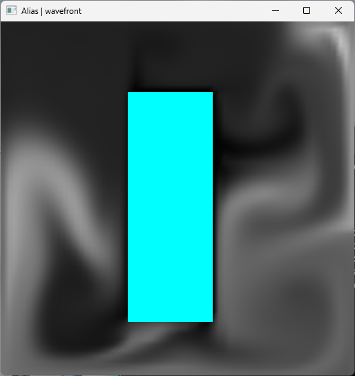
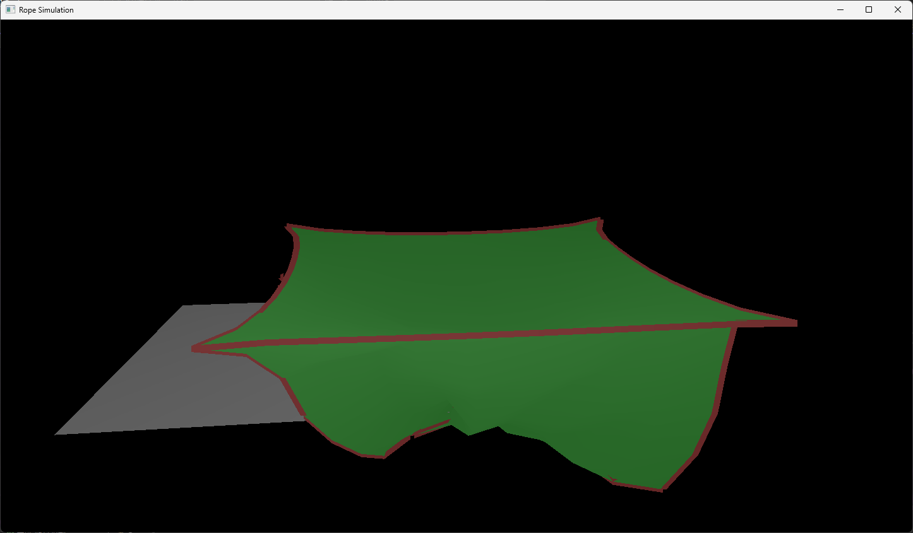
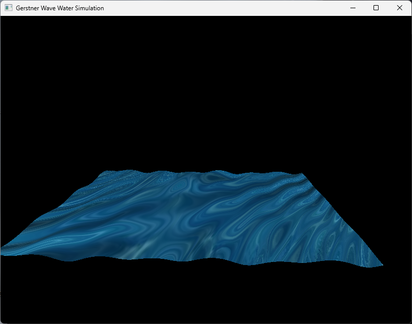
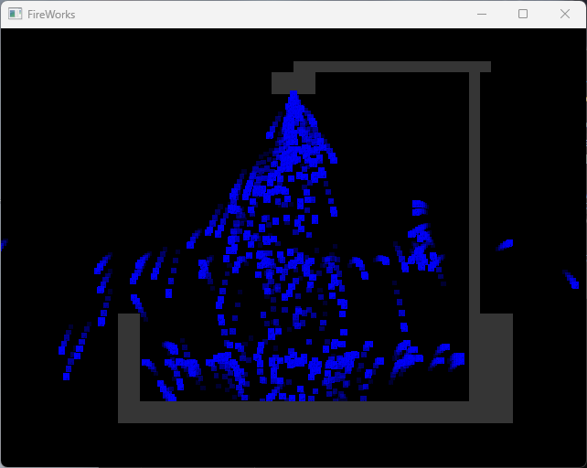

OpenGL动画开发
个人项目 | 2025/03-2025/05 | 独立开发

项目概述
OpenGL动画开发是基于计算机图形学理论的个人实践项目，通过C编写代码调用OpenGL接口，实现多项图形学核心实验效果。项目核心目标是将《图形与动画》课程中的物理模拟等理论知识落地，掌握从底层代码到视觉效果的完整实现流程，最终完成弹性物理模拟、水面模拟、烟雾模拟及粒子系统4个核心模块。
核心实现内容
-
弹性物理模拟：基于胡克定律构建弹簧-质点模型，用C++实现质点受力计算与运动积分，通过OpenGL绘制弹性物体（如布料、绳索）的形变动画，支持鼠标交互拉扯效果
-
水面模拟：采用正弦波叠加算法模拟水面波动，通过 vertex shader 动态修改顶点位置实现水面起伏效果，结合片段着色器实现水面对光的反射，提升视觉真实感
-
烟雾模拟：基于粒子系统实现烟雾扩散效果，定义粒子生命周期（生成-运动-消失），通过随机速度向量模拟烟雾飘动，结合alpha混合实现半透明叠加，支持调整粒子数量与扩散范围
-
粒子系统：通过struct这是粒子结构，并通过给粒子赋予随机方向移动和生命周期来模拟单个粒子的生命
项目截图

弹性物理模拟（布料形变效果，C++实现受力计算）

水面模拟（正弦波波动+反射效果，shader控制视觉输出）
烟雾模拟（粒子系统+alpha混合，实现半透明扩散）

粒子系统（自定义粒子生命周期，支持参数调节）
项目信息
项目类型
计算机图形学实践（个人项目）
开发周期
3个月（2025/03-2025/05）
开发角色
独立开发
核心目标
图形学理论落地，掌握OpenGL渲染与物理模拟
技术栈
C++
OpenGL
成果与收获
- 掌握OpenGL渲染管线完整流程，能独立编写顶点/片段着色器实现视觉效果
- 理解物理模拟核心算法（如胡克定律、正弦波叠加），提升代码实现与调试能力
- 完成《图形与动画》课程理论到实践的转化，为游戏图形优化（如UE5材质）提供底层认知